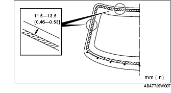
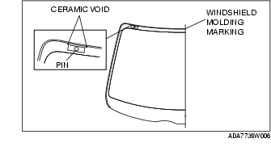
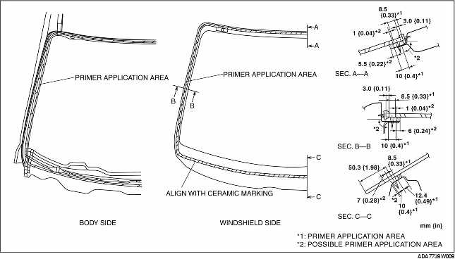
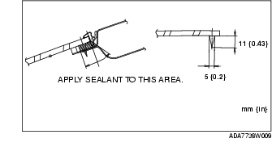
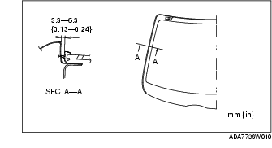
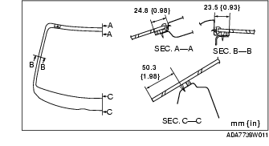

Windshield installation
- • To prevent the sealant from cracking or the glass from being pushed out by air pressure if a door is closed, open all of the windows and leave them open until the sealant has hardened.
1. Cut away the old sealant using a razor so that 1-2 mm {0.040-0.078 in} thickness of sealant remains along the perimeter of the frame.

2. If the sealant has come off completely in any one place, apply some primer after degreasing, and allow it approx. 3 min to dry. Then put on new sealant to create a 2 mm {0.08 in} layer.
3. Clean and degrease an approx. 50 mm {2.0 in} wide strip along the perimeter of the windshield and the bonding area on the body.
4. If installing reused windshield, attach a dam along 11.5-13.5 mm {0.46-0.53 in} from the glass end on the upper part and the pillar parts, and along the ceramic voids on the lower part of the windshield.

5. If installing a reused windshield, install pins at the ceramic voids on the upper part of the windshield.

6. If installing a reused windshield, install it by aligning the windshield molding mark with the ceramic notch on the windshield.

7. Use only glass primer on the glass, and body primer on the body and the molding. Allow it to dry for approx. 30 min.
- • Keep the area free of dirt and grease, and do not touch the surface or the primer may not properly bond to the surface of the glass and body, which may cause leaks to occur.

8. Apply sealant to the area of the glass surface as shown in the figure.

9. Insert the positioning pins to the body, then install the windshield.
10. Verify that the gap of the A-pillar part is as shown the figure.

11. Keeping the measurement of the molding lip gap within specification, press completely along the perimeter of the glass.

12. Install the cowl grille.
13. Install the headliner.
14. Install the interior mirror.
15. Allow the sealant to harden completely.